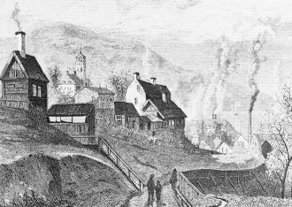
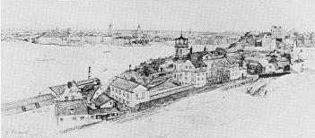

Södermalm i tid och rum
Gatunamnen i Skinnarviksbergen Ur Stockholms gatunamn, Stahre m fl, 1983
Skinnarbacken 1954Skinnarviksparken 1915
Skinnarviksringen 1931
Skinnarna eller garvarna hade ett illaluktande yrke. Man kan därför räkna med att de tillhörde de grupper av hantverkare som tidigt fick flytta ut på malmarna. Att det har bott skinnare här på norra delen av Södermalm framgår av bouppteckningen 1658 efter »Jöran Marekusson-Skinnare», som var gårdsägare vid »Skinnarewickz-gatan».
|
Skinnarnas yrkesutövning krävde god tillgång på vatten. De har därför sannolikt slagit sig ner nära stranden, vid Skinnarviken. År 1646 talas om en tomt »nedher weedh Siöstrandhen Ostan om Skijnnare wijken», och år 1658 nämns en gård på »Stadzens Tombt ofwan för Beswärsgathan Under bärget widh Skinnare wijken». Namnet »Skinnareberget», som är belagt 1636 och som återkommer några gånger under 1660- och 1670-talet, är säkerligen sekundärt till den namnform, som fr. o. m. 1670-talet tycks bli den vanliga, nämligen Skinnarviksberget eller Skinnarviksbergen. Såsom lokal namnform växlar ännu i dag Skinnarviksberget med Skinnarviksbergen(a). |
 
|
I Holms tomtbok 1679 nämns »Lastagie Platzen Uthi Schinner wijken». Här låg senare en kaj eller bryggor som kallades Skinnarviksbron 1820, Stora Skinnarviksbryggan 1850 och Lilla Skinnarviksbryggan 1850. Gatan som ledde ner till Skinnarviken fick namnet Skinnarviksgatan, belagt 1658 (se ovan). Fr. o. m. 1700-talets början uppträder namnet Stora Skinnarviksgatan vid sidan av Skinnarviksgatan för att under de första årtiondena av 1800-talet bli den definitiva namnformen fram till 1885, då namnet ersättes av Torkel Knutssonsgatan. Genomsprängningen av berget ner till Söder Mälarstrand var då ännu ej genomförd. Den del av den tidigare Stora Skinnarviksgatan, som låg närmast Söder Mälarstrand, fick 1885 namnet Skinnarviksgatan, som sedan utgick 1952 och ersattes av Ludvigsbergsgalan (se denna).
Nuvarande Gamla Lundagatan omtalas i Holms tomtbok 1679 såsom »Nybegynter gatta till Mårten Sommes gwarn». Denna kvarn har gett upphov till det ännu existerande kvartersnamnet Somens Kvarn. År 1686 kallas den av Holm omtalade gatan för »Soms quarn gata» och 1724 »Somens gwarngatan» men 1742 »Lilla Skinnarwiks gatan», vilket namn den behåller till namnrevisionen 1885, då man utbyter det mot Lundagatan, som i sin tur år 1961 ersättes av Gamla Lundagatan.
Ludvigsbergsgatan 1952
Namn efter »den här belägna fastigheten Ludvigsberg». Textilfabrikanten Ludvig Lamm på Heleneborg inköpte år 1843 från Allmänna Enke- och pupillkassan ett markområde vid Skinnarviken, där sonen Jacques Lamm samma år grundade Ludvigsbergs gjuteri och mekaniska verkstad. Namnet får betraktas som den unge gjuterifabrikörens hyllning till sin fader och finansiär. Fabriksverksamheten utvecklades snabbt och firman blev under 1800-talet ett ledande industriföretag i Stockholm. Två fabrikshus från 1855-56 finns ännu bevarade vid korsningen Söder Mälarstrand - Torkel Knutssonsgatan. Företagets magnifika chefsvilla (Villa Ludvigsberg) med det åttkantiga tornet uppfördes 1859-60. Företaget inköptes år 1904 av Münchens Bryggeri, som behövde marken för utvidgning av sin egen verksamhet och som överlät gjuterirörelsen till Luth & Rosen. Den nya ägaren flyttade rörelsen till sin fabrik vid Rosenlundsgatan.
|
 
|
Ludvigsbergsgatan har tidigare hetat Skinnarviksgatan, men namnet ändrades 1952 för att undvika sammanblandning med de många andra Skinnarviks-namnen (se Skinnarbacken). En del av gatan har under åren 1927-52 hetat Bergplatsgatan (efter »Stadens bergplats» på Skinnarviksbergen). |
Lundabron 1948
Lundagatan 1885
Vid namnrevisionen 1885 blev Lundagatan namn för dåvarande »Lilla Skinnarviksgatan och dess förlängning vesterut». I Beredningsutskottets utlåtande 1884 påpekas att vid namngivningen »äfven några få stadsnamn hava begagnats, nämligen ... Upsala och Sigtuna samt rikets andra universitetsstad Lund.» Gatans östra del har senare fått namnet Gamla Lundagatan.
Lundabron går över Torkel Knutssonsgatan intill Gamla Lundagatan.
Duvogränd 1806
Namnet är belagt sedan 1806 (Dufve Gränden). Av allt att döma bör det vara ett betydligt äldre namn. År
1695 omtalas »Gardies karlen Christian Dufwas tompt» på Skinnarviksberget. Tre år senare nämns »Geardies
karlens Erick Håkanson Dufvas ... gårdztompt» i kvarteret Skinnarviksberget. I samma kvarter ligger 1705
»fougden Pehr Anderson Duffwas gård».
Det är tydligt, att det är släktnamnet Duva som ingår i gatunamnet Duvogränd.
Yttersta Tvärgränd [1961]
Namnet visar, att gatan som 1647 omnämns såsom »ytterste Tieergathun» var den längst väster ut belägna av västra Södermalms »tvärgator». I Holms tomtbok 1679 förekommer gatan under benämningar som »Ytterste Twärgatan», »Nyin Twärgatta», »Tvär gata som Stannar I Berget» och »Twär gränden ytterst uth». I Stockholms beständige Vägvisare 1820 får gatan namnet »Ytterstatvärgr[änd]».